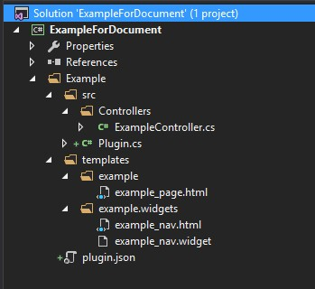

控制器和模板系统
ZKWeb使用了独自编写的控制器和模板系统，不依赖于asp.net和mvc的组件。
在ZKWeb中控制器接口只是一个空接口，自身不拥有状态。
获取当前http上下文可以通过HttpContextUtils.CurrentContext，
为了更好的支持单元测试，请不要使用HttpContext.Current。
添加控制器
添加Example\src\Controllers\ExampleController.cs，内容如下
使用Controllers文件夹保存控制器代码是命名习惯，不是必须遵从的。
/// <summary> /// 示例使用的控制器 /// </summary> [ExportMany] public class ExampleController : IController { [Action("example/plain_text")] public string PlainTextAction() { return "hello world on zkweb"; } }
保存后在浏览器中打开http://localhost:端口/example/plain_text，即可看到返回的内容。
控制器中标记了[Action]属性的函数都是可以访问的函数，返回类型可以是string或IActionResult。
在Action属性中可以指定路径和请求类型(GET或POST)，路径前面如果没有/会自动补上。
和mvc不一样，ZKWeb的路径完全由Action属性而不是控制器决定，而且处理函数必须标记Action属性。
模板页介绍
ZKWeb的模板系统使用了DotLiquid。 请先参考DotLiquid的文档: http://dotliquidmarkup.org/
使用它代替cshtml的原因有
- 模板只要求参数不要求环境，可以纯粹当成是字符串模板使用
- 模板只编译成语法树而不是IL代码，每个页面第一次打开的速度远比cshtml要快
- 没有内存泄漏的问题（可以在网站运行时不断更新模板页）
使用模板页
在上面的ExampleController下添加以下代码
[Action("example/template")] public IActionResult TemplateAction() { return new TemplateResult("example/example_page.html", new { text = "world" }); }
在Example文件夹下创建templates\example文件夹，并添加example_page.html文件，内容如下
<p>hello, {{ arg }}</p>
完成后的目录结构应该如下

保存后在浏览器中打开http://localhost:端口/example/template，即可看到hello, world。
模板标签和过滤器
模板支持自定义的标签和过滤器。
标签的格式是{% 标签 参数 %}
过滤器的格式是{{ 变量或常量 | 过滤器 | 过滤器: 参数,参数 | 更多过滤器... }}
修改上面的模板页内容:
{% use_title "Example Title" %}
{% include common.base/header.html %}
<div>{{ "HomePage" | trans }}</div>
<div>hello, {{ text | upcase }}</div>
{% include common.base/footer.html %}
刷新页面可以看到以下的效果:

更多的返回类型
上面介绍了TemplateResult，ZKWeb还提供了其他类型的结果。
FileResult(string path, DateTime? ifModifiedSince = null)ImageResult(Image image, ImageFormat format = null)JsonResult(object obj, Formatting formatting = Formatting.None)PlainResult(object obj)RedirectResult(string url, bool permanent = false)StreamResult(Stream stream, string contentType = null)TemplateResult(string path, object argument = null)
如果需要返回其他类型可以自己编写继承IActionResult的类。
获取请求参数
可以使用HttpContextUtils.CurrentContext.Request获取到请求对象并获取里面的参数。
目前ZKWeb不能像mvc那样通过函数参数来获取请求参数，但很多情况下不需要自己获取。
获取请求参数的例子:
var request = HttpContextUtils.CurrentContext.Request; var id = request.Get<int>("id"); // a collection combines Form and Request var file = request.Files[0];
重载处理函数
ZKWeb支持在一个插件中替换另一个插件的处理函数。 例如插件A定义了"example/a"，插件B也定义了同样路径的函数，ZKWeb会使用插件B中定义的函数。 这个功能可以用于编写自己的插件替换掉整个首页或登陆页面。 重载处理函数时需要指定"OverrideExists"参数，否则会提示冲突。
[Action("example/a", OverrideExists = true)] public IActionResult ExampleAInPluginB() { ... }
重载模板
ZKWeb支持在一个插件中替换另一个插件的模板文件，这点和Django一样。 例如有以下的目录结构，插件B在插件A后面加载时，插件B的模板页会替换到插件A的模板页。
- Plugins
- A
- templates
- a
- some_page.html (不会使用)
- a
- templates
- B
- templates
- a
- some_page.html (会使用)
- a
- templates
- A
模板还可以通过App_Data\templates重载，结构和上面一样。
支持模板的重载可以让新的插件随意更换原有插件的网页内容，也可以提供一套用户编辑的系统编辑所有页面。
动态内容
考虑到实现可视化编辑（动态拖拽和修改页面内容），ZKWeb提供了一套默认的动态内容系统。
这套系统定义了以下的类型
- 区域 (area)
- 模块 (widget)
每个区域下可以有多个模块，但区域不能嵌套区域。
可视化编辑时可以拖动模块加入区域，模块可以通过自定义的参数调整里面的内容。
在模板页中使用{% area 区域Id %}时会查找这个区域下的所有模块并加入到里面。
查找顺序是
- App_Data\areas\{区域Id}.widgets
- 程序中注册的默认模块列表
区域Id全局唯一，请注意是否会产生冲突。 全局唯一的理由是，有的区域（例如网站头部）是整个网站共享的，这时只需要编辑这个区域就可以应用到所有页面。
添加链接到导航栏
在默认的插件中提供了一个导航栏区域，名称是header_menubar。
下面演示怎样添加链接到这个区域中。
在Plugin类的Plugin()函数下添加以下代码:
var areaManager = Application.Ioc.Resolve<TemplateAreaManager>(); areaManager.GetArea("header_menubar").DefaultWidgets.Add("example.widgets/example_nav");
创建Example\templates\example.widgets\example_nav.widget，并添加以下内容
{ "Name": "Example Navbar Item" }
创建Example\templates\example.widgets\example_nav.html，并添加以下内容
<ul class="nav"> <li><a href="/example/template">{{ "Example" }}</a></li> </ul>
添加后文件结构应该如下: 
刷新页面可以看到以下的效果:

模板模块的单独缓存
模板模块支持设置单独的缓存时间和缓存策略，使用此功能可以大幅提高页面的响应速度。
在widget文件指定缓存时间，例如
{ "Name": "Example Navbar Item", "CacheTime": 15, "CacheBy": "Locale" }
这里的CacheTime表示该模块的描画结果会缓存15秒，CacheBy表示缓存的隔离策略。
这里缓存会按当前的语言和时区来隔离。
缓存的隔离策略可以通过实现ICacheIsolationPolicy接口添加。
目前Common.Base插件提供了多种缓存的隔离策略，请参考该插件的文档。